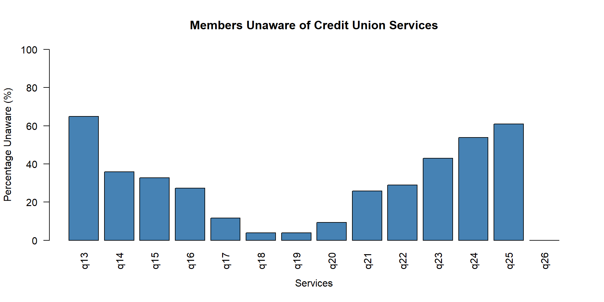

Case 31: Employees Federal Credit Union
Summary of Data Analysis | R1, R2, R5 & R6
Carmen Lia Jimenez Rodriguez
[1] "q3" "q4" "q5" "q6" "q7"
[6] "q8" "q9" "q10" "q11" "q12"
[11] "q13" "q14" "q15" "q16" "q17"
[16] "q18" "q19" "q20" "q21" "q22"
[21] "q23" "q24" "q25" "q26" "q27"
[26] "q30" "q31" "q32" "q33" "q34"
[31] "q37" "q38" "Att_employee" "filter_$" "Q7_r"
[36] "Q8_r" "Q37_r" "q9_r" "q10_r" "q13_r"
[41] "q14_r" "q15_r" "q16_r" "q17_r" "q18_r"
[46] "q19_r" "q20_r" "q21_r" "q22_r" "q23_r"
[51] "q24_r" "q25_r" "q26_r"
Service: q13
1 2 3
13 32 83
1 2 3
10.16 25.00 64.84
Service: q14
1 2 3
12 70 46
1 2 3
9.38 54.69 35.94
Service: q15
1 2 3
11 75 42
1 2 3
8.59 58.59 32.81
Service: q16
1 2 3
29 64 35
1 2 3
22.66 50.00 27.34
Service: q17
1 2 3
56 57 15
1 2 3
43.75 44.53 11.72
Service: q18
1 2 3
19 104 5
1 2 3
14.84 81.25 3.91
Service: q19
1 2 3
24 99 5
1 2 3
18.75 77.34 3.91
Service: q20
1 2 3
14 102 12
1 2 3
10.94 79.69 9.38
Service: q21
1 2 3
12 83 33
1 2 3
9.38 64.84 25.78
Service: q22
1 2 3
11 80 37
1 2 3
8.59 62.50 28.91
Service: q23
1 2 3
13 60 55
1 2 3
10.16 46.88 42.97
Service: q24
1 2 3
2 57 69
1 2 3
1.56 44.53 53.91
Service: q25
1 2 3
4 46 78
1 2 3
3.12 35.94 60.94
Service: q26
1 2
48 80
1 2
37.5 62.5

q9 q10 q11 q12
Min. :3.000 Min. :1.000 Min. :1.000 Min. :1.000
1st Qu.:3.000 1st Qu.:1.000 1st Qu.:1.000 1st Qu.:1.000
Median :3.000 Median :1.000 Median :1.000 Median :1.000
Mean :3.227 Mean :1.531 Mean :1.023 Mean :1.594
3rd Qu.:3.000 3rd Qu.:2.000 3rd Qu.:1.000 3rd Qu.:2.000
Max. :4.000 Max. :4.000 Max. :2.000 Max. :3.000
q31 q32 q33 q34
Min. :1.000 Min. :2.000 Min. :2.000 Min. :1.000
1st Qu.:4.000 1st Qu.:3.000 1st Qu.:3.000 1st Qu.:3.000
Median :4.000 Median :4.000 Median :4.000 Median :4.000
Mean :3.945 Mean :3.719 Mean :3.594 Mean :3.461
3rd Qu.:4.000 3rd Qu.:4.000 3rd Qu.:4.000 3rd Qu.:4.000
Max. :5.000 Max. :5.000 Max. :5.000 Max. :5.000
q37
Min. :1.000
1st Qu.:1.000
Median :2.000
Mean :1.934
3rd Qu.:2.000
Max. :5.000
NA's :7
Question: q9
3 4
99 29
Question: q10
1 2 3 4
68 54 4 2
Question: q11
1 2
125 3
Question: q12
1 2 3
74 32 22
Question: q31
1 3 4 5
1 27 77 23
Question: q32
2 3 4 5
6 45 56 21
Question: q33
2 3 4 5
7 45 69 7
Question: q34
1 2 3 4 5
2 14 38 71 3
Question: q37
1 2 3 4 5 <NA>
31 71 16 2 1 7
Operational Effectiveness: Descriptive Statistics
| q31 |
q31 |
128 |
3.95 |
0.68 |
| q32 |
q32 |
128 |
3.72 |
0.79 |
| q33 |
q33 |
128 |
3.59 |
0.68 |
| q34 |
q34 |
128 |
3.46 |
0.78 |
R6: Interpretation of Results
The descriptive analysis included 128 respondents. Among the four operational effectiveness measures, Q31 had the highest mean score (M = 3.95, SD = 0.68), followed by Q32 (M = 3.72, SD = 0.79) and Q33 (M = 3.59, SD = 0.68).
Q34 had the lowest mean score (M = 3.46, SD = 0.78), suggesting that this area may require further attention, assuming higher scores represent more favorable evaluations.
Overall, the results show differences in how members evaluated the four aspects of credit union operations. These findings can help identify areas of relative strength and potential improvement.
R1: Reasons for Joining the Credit Union
R1 examines why members decided to join Employees Federal Credit Union.
The questionnaire includes Q2, which asks respondents about their reasons for joining. However, Q2 is not included in the cleaned SPSS dataset provided for this analysis.
Therefore, frequencies and percentages could not be calculated for R1.
R2: Reasons for Using Other Financial Institutions
R2 examines why members borrow money from financial institutions other than the Credit Union.
The questionnaire addresses this research question through Q29. However, Q29 is not included in the cleaned SPSS dataset.
As a result, the reasons for borrowing from other institutions could not be analyzed directly. Additional data would be needed to answer R2 completely.
Conclusions and Recommendations
The analysis of 128 survey responses provided insights into members’ awareness of credit union services and their evaluations of operational effectiveness.
For R5, the findings revealed potential opportunities to improve awareness of available services. For example, 64.84% of respondents selected the “unaware” category for Q13.
For R6, the descriptive results showed that Q31 had the highest mean score (M = 3.95), while Q34 had the lowest (M = 3.46).
R1 and R2 could not be fully answered because Q2 and Q29 were not included in the available dataset.
Overall, these findings suggest that the credit union should further investigate service awareness and members’ evaluations of its operations before developing targeted improvements.